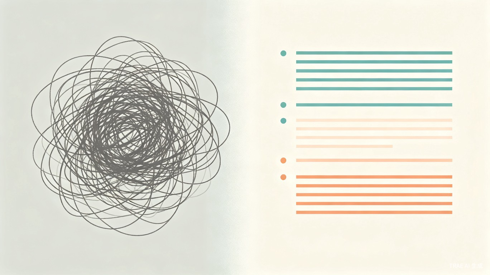

让每一份诉求都清清楚楚——一个会替群众把话说清楚、帮基层把单分清楚的 AI 诉求辅助小程序。
群众向政府部门提诉求时，要么说不清发生了什么、要么不知道这个事到底归谁管。一个原本简单的问题，演变成一场反复追问的拉锯战。
大量诉求在提交前如果能先过一遍「这事我能不能自己解决」「这个要求合不合理」，就能从源头减少无效工单，让基层把精力花在真正需要政府出面的事情上。

微信小程序——不需要下载、打开就能用，符合「遇事了随手打开」的使用习惯。
flowchart LR A[用户打开小程序] --> B[AI 对话引导
补全关键信息] B --> C{信息是否完整?} C -- 否 --> B C -- 是 --> D[生成结构化诉求摘要] D --> E[匹配同类型案例] E --> F{诉求是否合理?} F -- 是 --> G[直接提交到基层] F -- 否 --> H[提供自助解决建议] H --> I[用户自行处理] G --> J[基层管理后台
结构化分类 + 紧急度排序] J --> K[基层专注处理]
通过友好对话，逐步引导用户补全时间、地点、涉事方、已尝试的解决方式等关键字段，把模糊的吐槽变成清晰的事实。
AI 自动生成结构化诉求摘要，包含事件时间线、冲突点、用户诉求，可直接提交到基层管理系统。
基于案例库为用户推荐类似诉求的常见处理路径，让用户自己看到「类似情况通常先试试这几种办法」，避免动辄找政府。
为基层提供信息完整、分类清晰、重复工单已合并、明显不合理已前置提醒的工单列表，让基层只做「处理」一件事。
「我要投诉他们太欺负人了」——情绪化、信息缺失、基层反复追问 10 分钟仍无法派单。
「X月X日以来，XX小区X栋X单元X层住户夜间持续产生生活噪音，已尝试沟通 3 次未果，希望协调处理」——结构化、完整、可直接派单。
AI 引导用户理清时间线、冲突点、已尝试过的解决方式，帮助用户客观还原经过。
AI 引导确认具体位置、损毁情况、持续多久，减少「那边路上有个东西坏了」式无效描述。
用户说不清自己要办什么业务，AI 通过问答锁定真正的需求，匹配对应部门和所需材料。
不知道诉求该找谁、怎么说。AI 用对话引导补全信息，生成一份完整的诉求单；同时通过案例对比，让用户自己看到「类似情况通常先试试这几种办法，不行再报」。
收到的诉求已经过 AI 初筛和结构化整理，信息完整、分类清晰、重复工单被合并，明显不合理的诉求被前置提醒，基层直接进入「处理」环节而非「整理信息」环节。
不是帮谁推卸责任，而是让该政府管的诉求清晰高效地到达，让群众自己能解决的诉求在提交前就被识别出来。两边都省时间、少扯皮。
哪怕文化程度不高、不善表达的人，也能通过对话式引导产出一份清晰的诉求。同时用户被引导着「自己先判断一下」，无形中减少了冲动投诉。
从诉求产生的上游做文章——AI 做信息整理、去重、合理性初筛，基层只处理「AI 筛过一轮之后的精华」，这是真减负。
诉求处理链路从「说不清 → 追问 → 再追问 → 终于搞清楚 → 派单」变成「AI 一次性引导完毕 → 完整工单直接派发」。单件处理时间大幅缩短，无效流转大幅减少，政府热线的承载能力无形中翻了倍。